21 September 2026 · iOS development fixtures
Screen consistency review
Follow-up to the Gear update. Look and Fighter now use clearer selectors; character creation shares the new item art. Authentication and Stats have quieter surfaces.
Read the full audit, coverage and validation · Approved Edit Look reference

Still worth a dedicated pass: Arena/Profile hero height, real player avatars in competition lists, and stronger environmental battle-theme art.
Look: section hierarchy

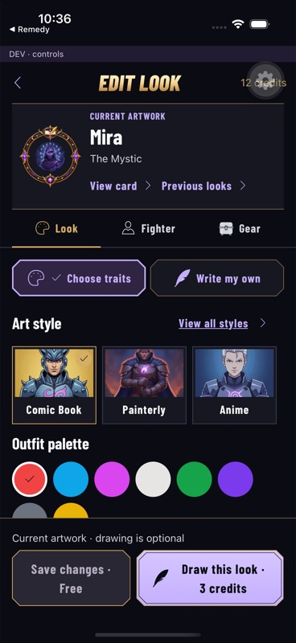

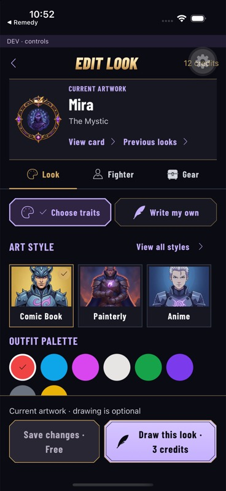
Fighter: compact archetype selector

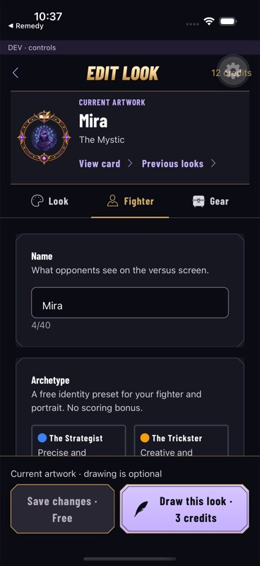

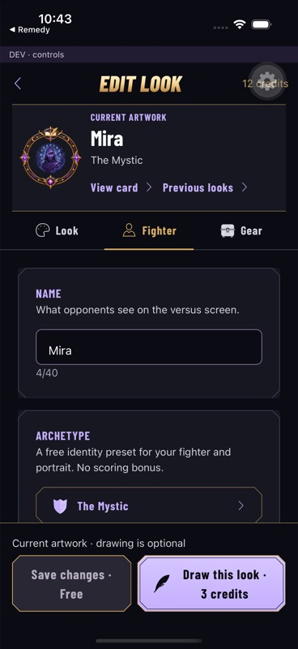
Updated controls and responsive states

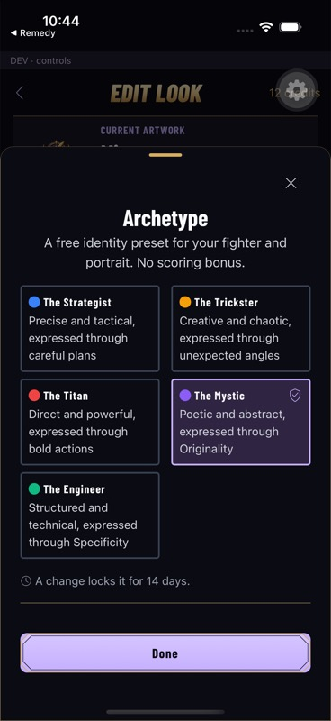

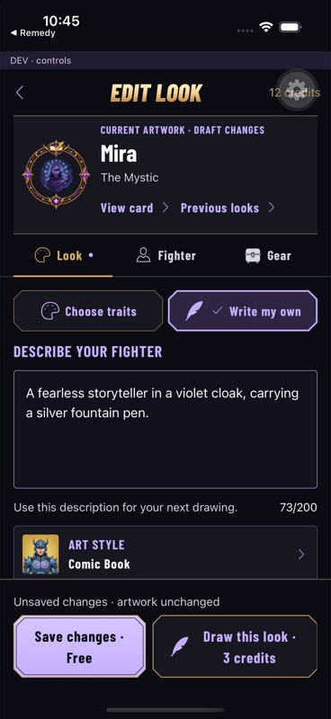

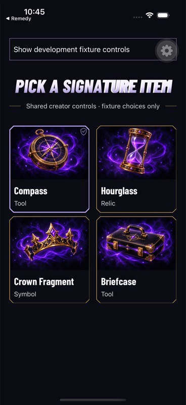

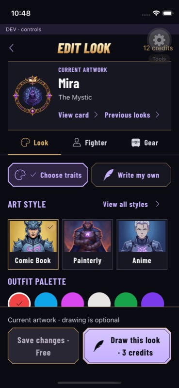

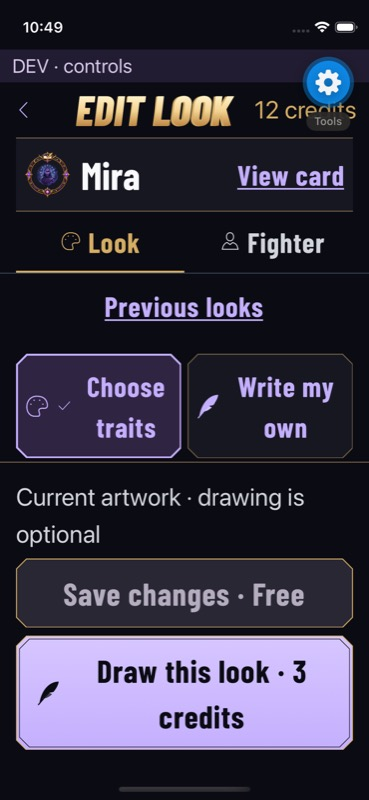

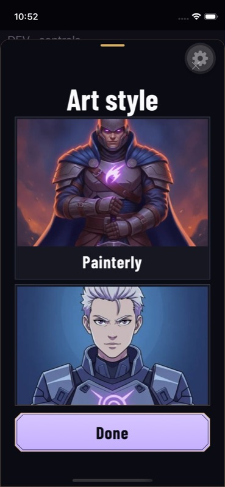
Main-screen review samples
These use shared components with local data. See the report for the production-route implications and remaining work.

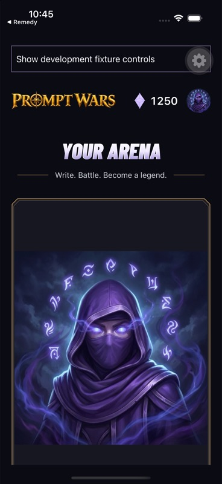

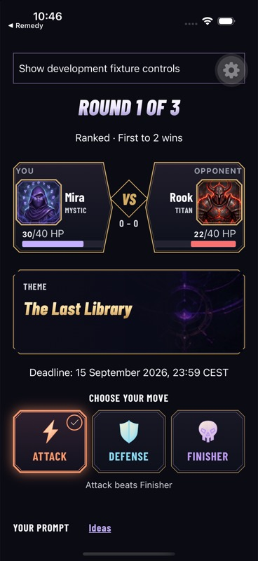

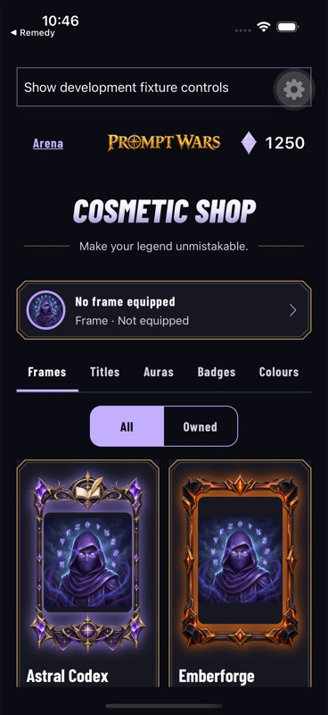